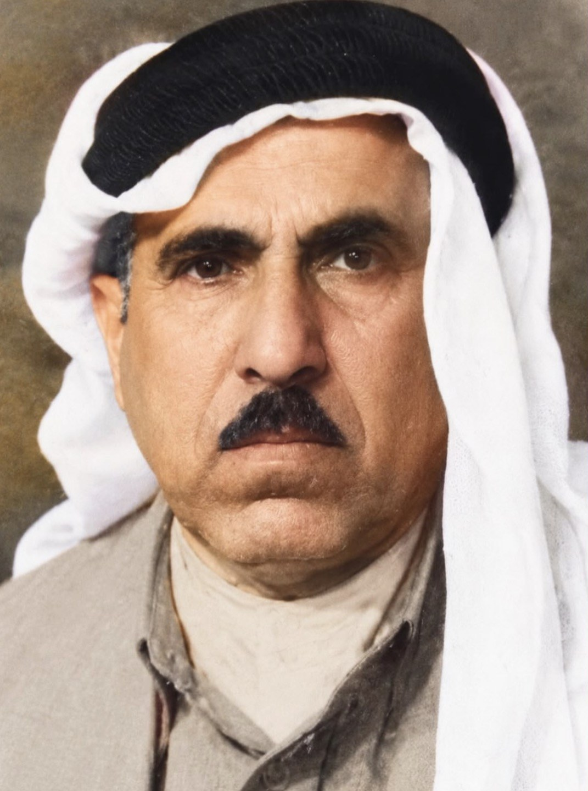
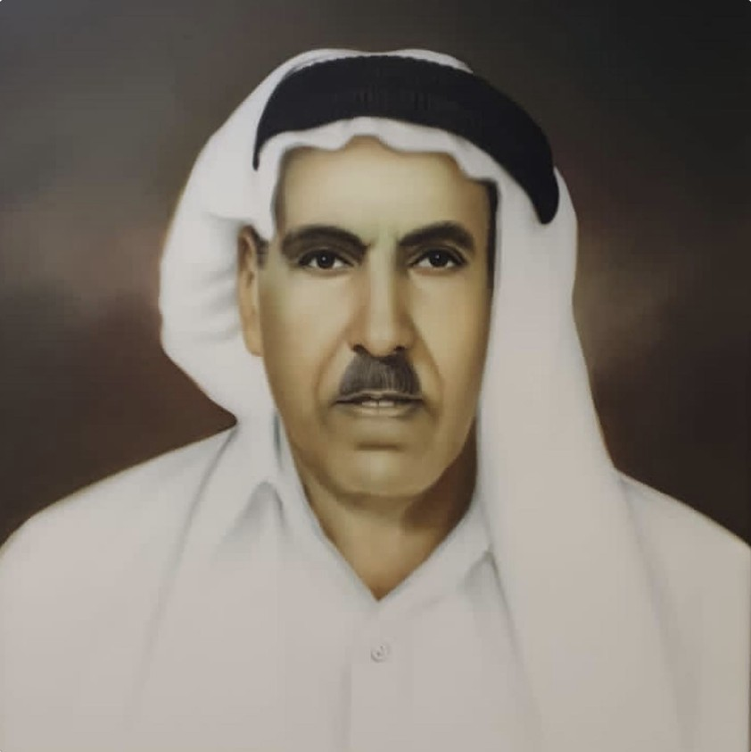
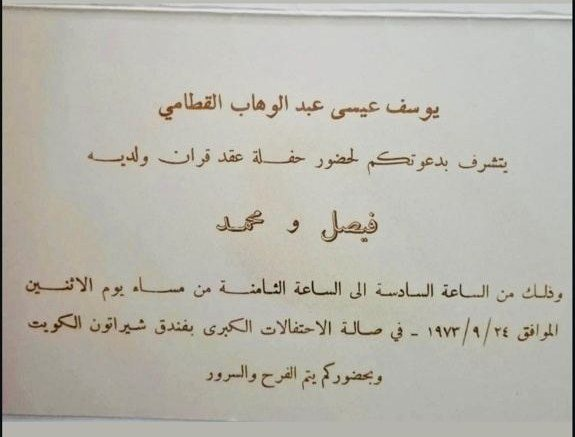

1930s to 1981
Yousef bin Eissa
Yousef learned to sail from his mother's relatives of Al-Shaheen Al-Ghanim. His first command was a boom of Naser Al-Najdi selling water to the pearling fleet; he found his crew in a mosque and paid their advance with money borrowed from his mother. He went on to command Bin Rushdan, and in the 1938 and 1939 season Alan Villiers wrote about him in Sons of Sinbad, visiting his clean ship and admiring him. That voyage ran from Basra to Karachi, Mangalore, Mombasa and Lamu.
Villiers met him again at Muscat and wrote about him in Monsoon Seas. He calls the ship the Samhan, registered at 305 tons and able to carry 5,000 packages of Iraqi dates, «commanded by a man named Yusuf bin Isa, son of Isa Kitami who had compiled the Kuwait Periplus». She carried two trainee navigators learning at his feet, and her route that season, Basra, Karachi, Bombay, Mangalore, Mombasa, Malindi and Lamu, is the same voyage Al-Hajji gives for Bin Rushdan. The season before, he had taken her from India straight to Aden.
The Al Zayed book and the Landmarks of Old Kuwait Town, quoting Sager Abdulwahab, both name him as the first Kuwaiti nakhuda to reach Port Sudan, and the Landmarks calls their safe arrival a miracle. The Al Zayed book dates it 1939. Al-Hajji tells the voyage in the 1941 and 1942 season, early in the Second World War, when he took his ship into the Red Sea to Port Sudan, then to Hodeidah, where Imam Yahya's agent kept him waiting two months for a coffee cargo that never came because of submarines. Yousef told Al-Hajji the story in 1979 with a quiet smile. After the war he kept an office in Souq Al-Tujjar where his old sailors visited him every morning. He died in 1981, aged 73.




Documents for this part
Sources
- Al-Hajji, Nawakhdhat Al-Safar Al-Shira'i, pages 49 to 52
- Facey, Al-Hijji and Pundyk, introduction to Villiers, Sons of Sindbad, 2006, quoting Alan Villiers, Monsoon Seas, 1952
- Ma'alim Madinat Al-Kuwait Al-Qadima, part 7, pages 42 and 43 (the Al-Qatami house and diwan, plot 42), with footnotes 19 and 20
- Yousef Mohammed Saqr Al-Jasser Al-Ghanim, Al Zayed: Tarikh wa Rijal, 2006, page 27